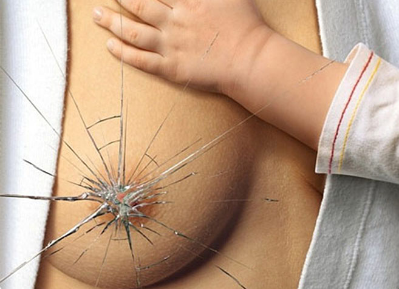
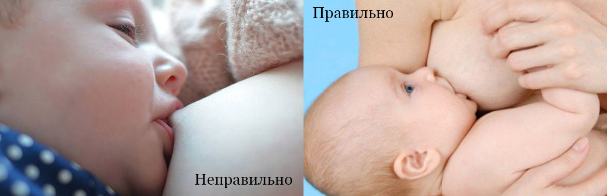
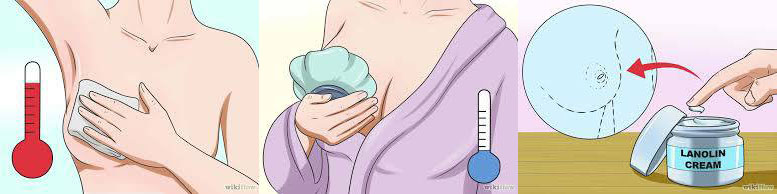

Біль та тріщини сосків: що робити?

Автор: Анна Соколенко (лікар-дерматолог)
Найважливіше - це усунути причину травми:
- Виправити прикладання малюка до грудей і/або техніку смоктання.
- Якщо є молочниця сосків або інфікована ранка на соску - звернутися до лікаря, який призначить препарат для лікування інфекції.
Що може допомогти до і під час годування:
- Не чекайте, коли дитина сильно зголодніє. Засмучений малюк може гірше брати груди.
- Спочатку прикладайте малюка до менш травмованої молочної залози. Як правило, діти смокчуть акуратніше ту грудь, яку пропонують другою.
- Найболючішими зазвичай є перші секунди після прикладання. Полегшити їх може використання тепла або холоду. Деяким мамам допомагає звернути кубик льоду в хустку і прикласти його до соска на кілька секунд, щоб знизити чутливість, іншим - навпаки, прикладання на такий самий час хусточки, змоченої в дуже теплій воді.
- Знайдіть найзручнішу позу для годування.
- Викличте рефлекс виділення молока перед початком годування: помасуйте груди, зцідіть кілька крапель. Молоко відразу почне надходити дитині в рот, і вона буде смоктати м'якше.
- Якщо годування з грудей надзвичайно болісне, регулярно зціджуйте молоко і давайте його малюкові. Краще годувати його з чашки або з ложечки. Коли соски загояться, почніть прикладати дитину знову, ретельно стежачи за тим, як дитина бере груди.

Після годування:
- Примочки/ванночки для сосків з фізрозчину допоможуть пошкодженій шкірі гоїтися швидше. Фізрозчин можна зробити самому, розчинивши в склянці теплої води ¼ -½ чайної ложки солі (без гірки). Розчин не повинен “щипати” ранку. Кожен день готуйте новий розчин.
- Ви можете опустити соски в невелику чашечку з фізіологічним розчином приблизно на хвилину. Уникайте занадто довгих процедур, оскільки це може призвести до протилежного результату (5 хвилин - це багато). Після ванночки промокніть соски серветкою (дуже обережно).
- Можна зцідити кілька крапель грудного молока і змастити ним соски - це допомагає загоєнню.
- Можна нанести на соски тонкий шар високоочищеного ланоліну (типу Пурелан). Це роблять для того, щоб на ранці не утворювалися кірочки.
- Якщо у вас молочниця сосків, після ванночки треба нанести не зволожуючий засіб (ланолін), а протигрибковий крем (виписує лікар). Одночасно треба обробляти і рот малюка засобом, який виписує лікар - при молочниці лікують і маму, і дитину.

Між годуваннями:
- Провітрюйте соски частіше.
- Слідкуйте, щоб соски не були притиснуті одягом або прокладкою.
- Порадьтеся з лікарем щодо прийому болезаспокійливих препаратів, сумісних з грудним вигодовуванням (наприклад, парацетамол, ібупрофен)
- Якщо є ранка, раз на добу очищайте її, промиваючи фізрозчином або теплою мильною водою. Це профілактика інфікування. Застосування мила на здоровій шкірі сосків не рекомендується.
Зверніться до лікаря, якщо піднялася температура або Ви помітили почервоніння/запалення соска або грудей, виділення гною, незвичайний пекучий біль, який посилюється навіть в кінці годування та інші ознаки інфекції.
Вікторія Нестрова, IBCLS
переклад Соколенко Анна, з дозволу автора